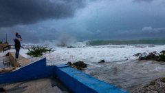

FORTUNE
Yesterday
The Russian economy will ‘die by winter’ because of the ‘catastrophic consequences’ of the military mobilization
Bustle
Yesterday
Shania Twain Is Still The One
Weather.LIVE
Ian regains hurricane strength as Florida assesses damage

US elections.LIVE
Massachusetts: Election news and updates